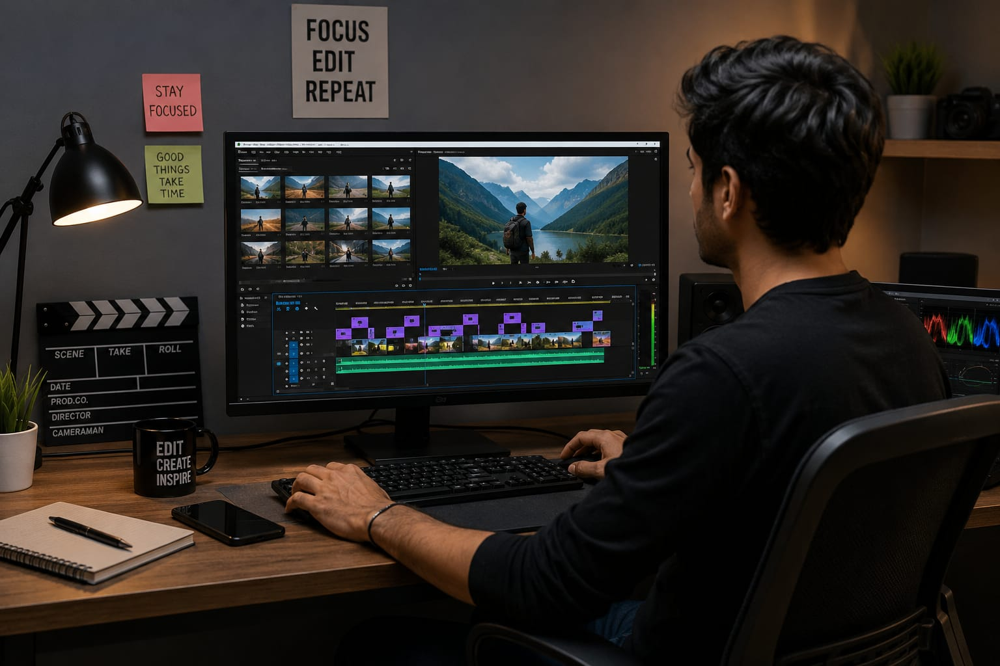

✂️ Video Editor
🧑🏭 What Do They Do?
- When you watch a movie, YouTube video, reel, advertisement, or vlog
- every scene looks smooth and arranged perfectly because someone edits and combines the video clips carefully.
- They choose the best scenes, add music, sound effects, transitions, and visual effects.
- That person is called a Video Editor. 👉 In simple words: Video Editors add music, sound effects, and visual effects to normal videos to make them more interesting and engaging.

🎓 How to Become a Video Editor
After completing 10th, students can start learning video editing, post-production, VFX, and video production through certificate and diploma courses.
Diploma in Video Editing / Post-Production
Duration: 2 – 6 Months
Eligibility: 10th Pass
Exam: No Exam
Certificate in Video Production
Duration: 3 – 6 Months
Eligibility: 10th Pass
Exam: No Exam
Diploma in Animation & VFX
Duration: 1 – 2 Years
Eligibility: 10th Pass
Exam: No Exam
Vocational Diploma in VFX and Editing
Duration: 1 – 2 Years
Eligibility: 10th Pass
Exam: No Exam
Note: Students can later move into advanced video editing, filmmaking, animation, VFX, or digital media courses through higher studies.
After completing 12th, students can study professional video editing, sound editing, filmmaking, and audiovisual production through degree and diploma courses.
B.Sc. in Sound & Video Editing
Duration: 3 Years
Eligibility: 10+2 Pass
Exam: Merit-Based
B.A. in Film, Television & Web Series (Editing Specialization)
Duration: 3 Years
Eligibility: 10+2 Pass
Exam: WWI Entrance Exam / Merit-based
Diploma in Audiovisual Editing
Duration: 1 – 2 Years
Eligibility: 10+2 Pass
Exam: No Exam
Diploma in Video Editing and Sound Recording
Duration: 1 Year
Eligibility: 10+2 Pass
Exam: No Exam
📝 Exam Details
(Click on the exam name to see full details)
Merit-Based Admission WWI Entrance Exam No ExamNote: Students can later specialize in film editing, OTT content production, sound design, post-production, VFX, or digital media careers through higher studies and industry training.
After graduation, students can specialize in advanced video editing, digital media, VFX, film production, and post-production through PG diploma and master’s programs.
Post Graduate Diploma in Video Editing
Duration: 1 – 2 Years
Eligibility: Graduation in any stream
Exam: FTII JET
M.A. in Visual Effects and Film Production
Duration: 2 Years
Eligibility: Bachelor's Degree
Exam: CEED / NID DAT / CUET-PG
PG Diploma in Digital Media
Duration: 1 Year
Eligibility: Graduation in any stream
Exam: IIMC Entrance Exam / CUET-PG
📝 Exam Details
(Click on the exam name to see full details)
FTII JET CEED NID DAT CUET-PG IIMC Entrance ExamNote: These advanced programs help students specialize in professional editing, OTT content production, VFX supervision, film post-production, and digital storytelling careers.
To help students learn video editing, visual storytelling, sound design, and post-production from home, here are some popular online Video Editing courses.
The Foundation of Video Editing
Duration: 1 – 4 Weeks
Eligibility: Open to all
Exam: No Exam
Adobe Premiere Pro for Beginners
Duration: Less than 2 Hours
Eligibility: Beginner level
Exam: No Exam
The Art of Visual Storytelling
Duration: 3 – 6 Months
Eligibility: Beginner level
Exam: No Exam
Mastering Final Cut Pro
Duration: 8 Weeks
Eligibility: Open to all
Exam: No Exam
Note: Online courses help students build editing, storytelling, sound design, and post-production skills from beginner to advanced level.
(Age limits, marks, and admission process may vary depending on the college or state. These courses are available in many colleges and universities across India. You can choose colleges based on your location, budget, and entrance exams.)
🏫 Top Colleges
After 10th
Arena Animation MAAC (Maya Academy of Advanced Cinematics) ZICA (Zee Institute of Creative Art)After 12th
Whistling Woods International (WWI), Mumbai AAFT (Asian Academy of Film and Television), Noida MGR Government Film and Television Institute, Chennai Lovely Professional University (LPU), Punjab Amity School of Communication, NoidaAfter Graduation
Film and Television Institute of India (FTII), Pune Satyajit Ray Film & Television Institute (SRFTI), Kolkata Indian Institute of Mass Communication (IIMC), New Delhi AJK Mass Communication Research Centre (Jamia Millia Islamia), New Delhi Manipal Institute of Communication, ManipalImagine you are working as a Video Editor.
You collect video clips, music, and audio files.
You cut and arrange video scenes.
You add effects, subtitles, and background music.
You improve the video with color and sound editing.
The final video is uploaded or shared with viewers.
If you enjoy creativity and video making, this career may suit you.
Where do Video Editors work? (Job Roles + Growth)
These are some places where Video Editors can work.
You can start with beginner roles and grow with experience.
🔵 Beginner Roles
Production Assistant (PA)
Help the editing team with files and daily tasks.
Junior Video Editor
Edit short videos for social media and digital content.
Assistant Editor
Organize video clips and prepare project files.
🟣 Mid-Level Roles
Video Editor
Edit raw footage into a complete video story.
Motion Graphics Artist
Create animated text and visual effects.
Colorist
Adjust colors and lighting for a professional look.
🟢 Advanced Roles
Senior Video Editor
Lead major editing projects and creative decisions.
Post-Production Supervisor
Manage the entire editing and post-production team.
Creative Director
Guide the visual style of films and media projects.
International Advertising Agencies
You edit videos for global companies like Nike, Apple, and Coca-Cola.
Global Streaming Platforms
You work on movies, web series, and digital shows for Netflix.
Remote Content Agencies
You edit YouTube videos, reels, and social media content.
International Post-Production Houses
Work with teams handling VFX, sound design, and color grading for studios.
International News & Documentary
Edit documentaries and news stories for global media channels like BBC .
(Click Yes or No for each question)
1. Have you ever wondered how movies, reels, or YouTube videos are edited?
2. Do you enjoy arranging videos, music, and effects creatively?
3. Are you interested in learning how videos are edited?
4. When you watch a movie, have you ever wondered how scenes are arranged so smoothly?
5. Are you willing to spend time editing videos on a computer?